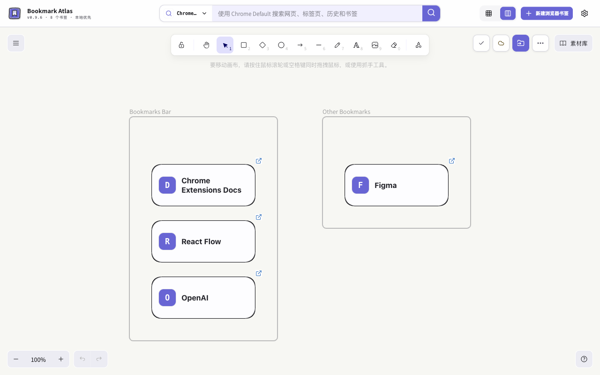

你的新标签页。
不止是书签。
把完整 Excalidraw 画布放进 Chrome 新标签页。收藏、绘图、做笔记，也能将网页和视频嵌入画布，让资料与想法放在一起。
沿用原生书签 · 本地优先 · AI 完全可选

收藏
点击扩展图标添加当前网页，或通过「导入书签」把已有书签放进画布。
整理
拖动、多选、切换图标 / 简洁 / 详细卡片；加备注、框架和连线，也可先预览 AI 整理建议再应用。
打开
点击卡片的网站图标打开；也可通过搜索查找书签、已打开标签页和浏览历史。
本地优先，
边界说清楚。
阅读隐私政策画布与你的浏览器一起工作
完整画布保存在本机。轻量画布可在同一 Chrome 账号、同步可用且配额允许时跨设备同步，但不保证固定到达时间。图片和二进制附件留在添加它们的设备上；完整备份可保留副本。
AI，仅在你选择时使用
使用自配服务商，明确确认所选元数据，先预览、再应用。凭据在本机加密保存，不参与同步或备份，也不等同于系统钥匙串；服务商费用与数据政策仍然适用。
每次更新，都有完整介绍。
Chrome 商店当前版本：0.9.6。实际上架日期：2026-10-22。
Chrome 与 Microsoft Edge 已分别上架。安装 Edge 版；Edge 双设备同步仍待验收。Safari 尚未正式支持。
查看版本介绍与更新记录一起把画布做得更好。
收藏项目、反馈问题，或告诉我们你想放进画布的网站。
适配申请请附公开网址、复现步骤、预期表现和已去除私密内容的截图。不要提交账号、API Key、完整备份或私密书签。